исследование и развитие цифровых инициатив
Каждый бизнес хочет стать эффективнее. Мы помогаем добиться результата с минимальными рисками и расходами

Руслан Бакиев
Основатель компании
Запустить start-up
В таких сферах как logistic, foodtech, proptechУлучшить эффективность бизнеса
Путем внедрения цифровых технологийРеализовать цифровую инициативу
Корпоративную или государственную
Найдем особенный подход к вашему проекту
Мы пропагандируем data-driven концепцию — это значит что мы планируем, собираем данные и принимаем решения на их основе.
При реализации проекта мы используем спиральный подход. Это означает, что мы двигаемся постепенно к намеченной цели, определяя этапы, цели и критерии успеха.
Это позволяет нам эффективно использовать бюджет и получить необходимую гибкость, чтобы внести изменения в любой момент.
Наши услуги
Чем мы можем вам помочь?
Подробное изучение
Исследование среды для внедрения цифровых продуктов
Трансформация бизнеса, запуск стартапа или новая инициатива требуют проведения исследования, на основе которого будут приниматься дальнейшие решения
Проектирование информационных систем
Проектирование информационной системы необходимо для минимизации рисков и ускорения процесса разработки программного обеспечения. Для достижение результата мы используем научный подход и лучшие мировые практики
Разработка спецификации требований к информационной системе
После того, как мы получили модель будущей ИС, необходимо подготовить требования разработки. Мы разрабатываем документ, который описывает дизайн-подход к разработке ИС и содержит мотивы, формирующие требования к системе, а не просто техническое задание
Программирование
Если вы желаете реализовать проект, мы готовы помочь вам и
организовать процесс разработки - собрать команду, выстроить
работу с подрядчиками. В данном контексте работы всю
ответственность за выполнение работ
мы берем на себя
Внедрение наработок в ваш бизнес
За многолетний опыт работы в отрасли мы обросли своими продуктами, которые продвигаем на рынке и готовы обсудить сотрудничество по их внедрению
- Международная мультивендорная платформа
- Редактор для проектирования информационных систем по методологии IDEF
- Система управления бизнесом (BI)
бережливое производство и Open source
Мы ценим ваше время и готовы использовать уже внедренные системы в вашей компании или применять мощные open-source решения, которые позволят сконцентрироваться на целях.
- Odoo
- Reactjs
- Django
- Flutter
- Gprc
- Camunda